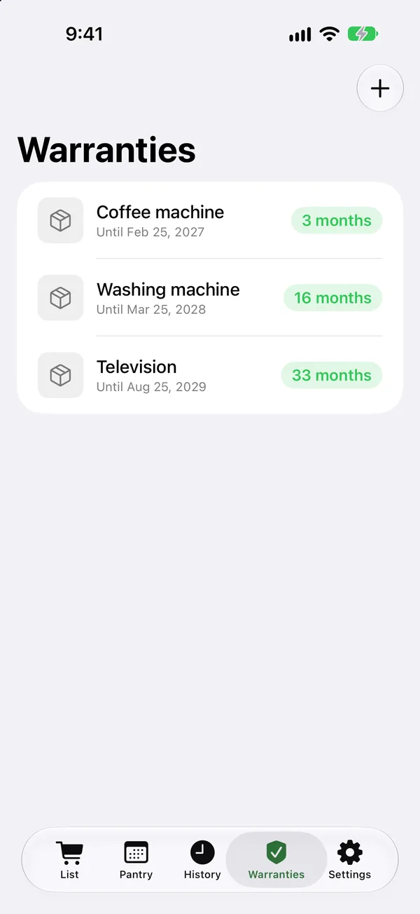

How to save a warranty with a receipt photo
-
Step 1 Turn on the Warranties tab
The tab is hidden by default. Turn it on in Settings → Features → Warranties – a Warranties tab appears at the bottom.

-
Step 2 Add a warranty
On the Warranties tab, tap +. In New Warranty, fill in the product, Store, Purchased date and Warranty length (at least 24 months in the EU). Use Note for things like a serial number.

-
Step 3 Attach the receipt and save
Under Receipt, choose Take Photo or Choose from Library and save with the green ✓. Tap the photo later to see it full screen.

Frequently asked questions
When will I get a reminder?
About a month (30 days) before the warranty ends, at the time set in Settings → Notifications → Time. It works when notifications are allowed and Use-by reminders are on.
Can my family see my warranties?
No. Warranties and their photos are private and never shared with your household. The photo stays only on your iPhone and in your private iCloud.
More questions are answered on the Support page.